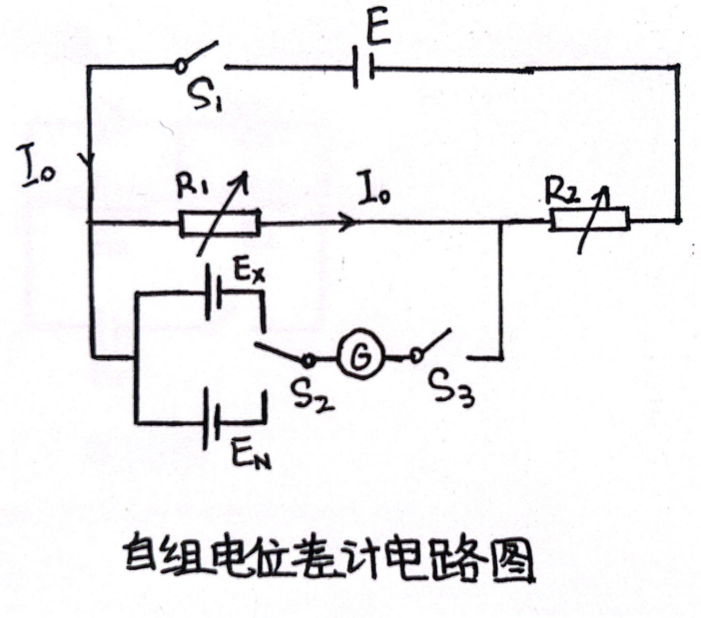
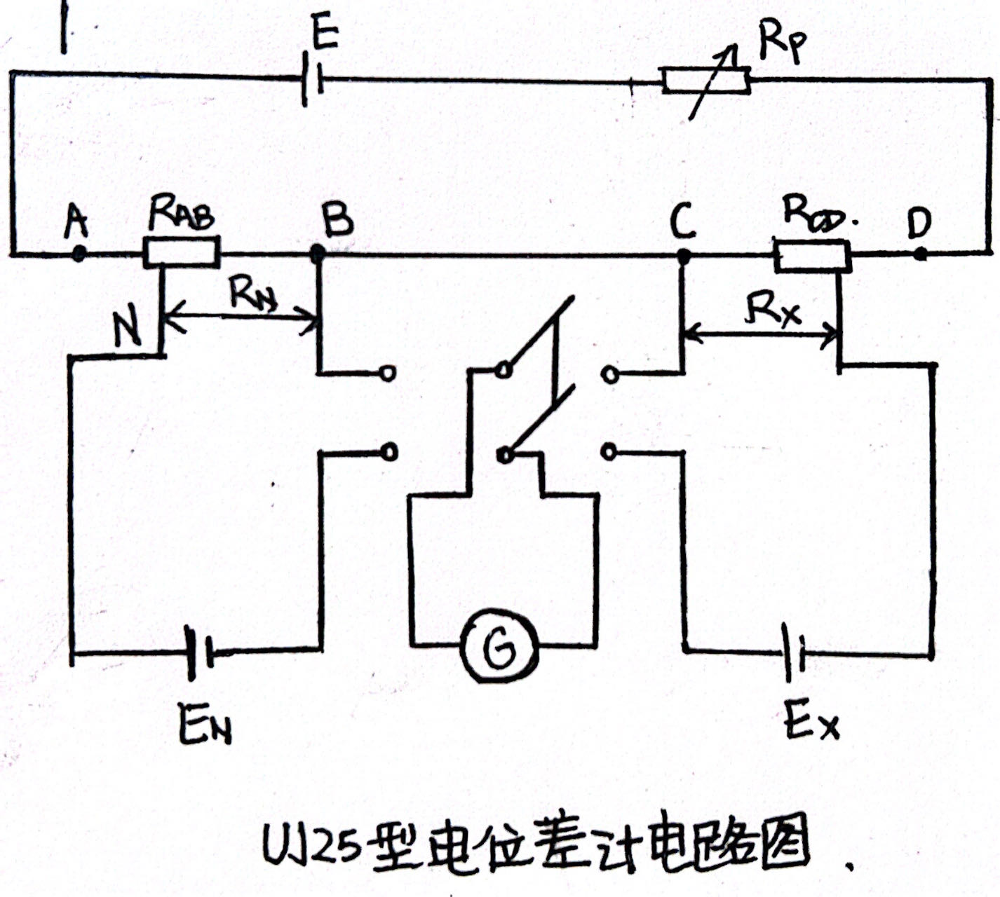

4.8 电位差计及其应用
4.8.1 实验要求
4.8.2 实验原理
4.8.3 实验仪器
4.8.4 实验内容
-
自组电位差计
- 设计并连接自组电位差计电路
- 工作电流标准化，测量干电池电动势
- 测量自组电位差计的灵敏度
-
UJ25型电位差计
- 使用UJ25型电位差计测量干电池电动势
- 使用UJ25型电位差计测量固定电阻或量程为10mA的电流表内阻
4.8.5 思考题
4.8.6 拓展研究
4.8.7 实验报告
- 自组电位差计测量待测干电池电动势
电路图如下

连接电路，开关在接入前全部断开
测量当前环境温度，按照温度修正公式\(E_N \approx E_{20} - 3.99 \times 10^{-5}(t - 20^{\circ}C)^2 + 9 \times 10^{-9}(t - 20^{\circ}C)^3\)算出\(E_N\)的大小，其中\(E_{20}\)为\(20^{\circ}C\)时的电动势， 可取\(E_{20} = 1.01860V\)。
进行工作电流标准化，将\(R_1\)阻值调至\(\frac{E_N}{I_0}\)，其中\(I_0\)为预先设定的标准电流，通常为\(I_0 \equiv 1mA\)，并且使得\(R_2 \approx \frac{E - E_N}{I_0}\)，这样使得一开始更接近补偿点。
先将\(S_2\)打至与\(E_N\)相接，关闭\(S_1\)，用跃接法轻关\(S_3\)并立刻断开，同时观察电流计指针偏转情况，发现有轻微偏转，观察偏转方向为向左，说明回路中分压偏低，电流左流，将\(R_2\)调小\(R_1\)同等调大再次观察，发现轻微右偏，说明回路中分压偏高，电流右流。将\(R_2\)调大\(R_1\)同等调小再次观察，重复多次后发现电流计指针不偏转，记录下此时的\(R_1\)和\(R_2\)的阻值，根据公式\(\Delta_{仪}=\Sigma_ia_i\% \cdot R_i + R_0\)，计算出此时的仪器误差限。
关闭\(S_1\)，将\(S_2\)打至与\(E_X\)相接，根据\(E_X\)的估计值实现将\(R_1\)调至\(\frac{E_XR_1}{E_N}\)，将\(R_2\)调至\(R_1 + R_2-\frac{E_XR_1}{E_N}\)，使得一开始更接近补偿点。
用跃接法轻关\(S_3\)并立刻断开，同时观察电流计指针偏转情况，发现有轻微偏转，观察偏转方向为向左，说明回路中分压偏低，电流左流，将\(R_2\)调小\(R_1\)同等调大再次观察，发现轻微右偏，说明回路中分压偏高，电流右流。将\(R_2\)调大\(R_1\)同等调小再次观察，重复多次后发现电流计指针不偏转，记录下此时的\(R_1\)和\(R_2\)的阻值记为\(R'_1\)和\(R'_2\)，计算出此时的仪器误差限。
最后进行电流计灵敏度测量。
同时调整\(R_1\)和\(R_2\)保证\(R_1 + R_2\)大小不变，保持\(S_3\)关闭，使得电流计指针偏转\(10 \sim 14 div\)，本次实验偏转\(14div\)，记录下此时的\(R_1\)和\(R_2\)的阻值记为\(R'_1\)和\(R'_2\)。
依次关闭\(S_1, S_3, S_2\)。
重复做上述实验3次，测得3组数据，数据如下。
t = \(E_N=\)
| 组别 | 第一组 | 第二组 | 第三组 | |||||||||
|---|---|---|---|---|---|---|---|---|---|---|---|---|
| 类别 | \(R_1/\Omega\) | \(R_2/\Omega\) | \(R'_1/\Omega\) | \(R'_2/\Omega\) | \(R_1/\Omega\) | \(R_2/\Omega\) | \(R'_1/\Omega\) | \(R'_2/\Omega\) | \(R_1/\Omega\) | \(R_2/\Omega\) | \(R'_1/\Omega\) | \(R'_2/\Omega\) |
| 示值\(R_i(R'_i)\) | ||||||||||||
| 仪器误差限\(\Delta R_i(\Delta R'_i)\) | ||||||||||||
| 灵敏度测量\((n=14div)\) | - | - |
- UJ25型电位差计测量待测干电池电动势
电路图如下

将开关全部断开，将电位差计功能转换开关至于断，连接电路，将电流计接在电位差计的电计接口处，\(E_N\)接在电位差计标有标准接口处，\(E_X\)接在电位差计标有未知1接口处，根据工作电源电压值接入电位差计对应端。
测量当前环境温度t，按照温度修正公式\(E_N \approx E_{20} - 3.99 \times 10^{-5}(t - 20^{\circ}C)^2 + 9 \times 10^{-9}(t - 20^{\circ}C)^3\)算出\(E_N\)的大小，其中\(E_{20}\)为\(20^{\circ}C\)时的电动势， 可取\(E_{20} = 1.01860V\)，调整温度补偿电阻\(R_{AB}\)的后两位进行修正。
将电位差计功能开关至于\(N\)，按下验流计控制按钮粗，调整\(R_P\)至电流计指针不偏转，再按下按钮细，再次调整\(R_P\)至电流计指针不偏转。
将电位差计功能开关至于\(X_1\)，按下验流计控制按钮粗，调整\(R_{CD}\)至电流计指针不偏转，再按下按钮细，再次调整\(R_CD\)至电流计指针不偏转。
记录此时\(R_{CD}\)的显示值即为待测电压。
重复上述实验3次并记录相应数据。
数据表格如下
t= E_N=
| 组次 | 1 | 2 | 3 |
|---|---|---|---|
| 示值U/V |
- 使用UJ25型电位差计测量固定电阻
电路图如下
最后可以利用\(R_X = R_N\cdot \frac{U_2}{U_1}\)计算得到